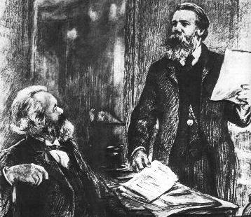

|  |
Study Guide for |
Preparatory Reading
Pre-Capitalist Economic Formations, Marx 1857
Part Played by Labour in the Transition from Ape to Man, Engels 1876
Introduction and Prefaces
Introduction
Preface to the First Edition
Preface to the Fourth Edition
Henry Morgan
Origin of the Family, Private Property and the State
Chapter 1. Stages of Prehistoric Culture
Terms: Civilisation, Tribal Society.
Questions for discussion:
1. How do Henry Morgan's categorisations stand up to your own knowledge of early societies, over a hundred years later?
2. What do you think are the essential truths of Morgan's analysis that remain valid today?
Chapter 2. The Family
Questions for discussion:
1. What does “consanguinity” mean and what is meant by the “consanguine family”?
2. Marx notes Morgan's observation about “systems of consanguity” and says “the same is true of the political, juridical, religious, and philosophical systems in general”. What exactly did he mean by this?
3. What argument does Engels use to reject the idea that pair-bonding was the form of family at the very beginning of human development?
4. So far as you know, in what sense are all forms of family known in human societies different from anything found, for instance, among the primates, if any?
5. What vestiges of mother-right do you see in your own modern society?
6. What do you know of the marriage practices, taboos, rights of inheritance, and so on, in the history of the indigenous people of your own country?
7. What, according to Engels, is the relation between monogamy and the overthrow of mother-right?
8. What does Engels see as the cause for the fall of mother-right and the institution of monogamy?
9. What do you make of: “The first class opposition that appears in history coincides with the development of the antagonism between man and woman in monogamous marriage, and the first class oppression coincides with that of the female sex by the male.”?
10. Do you think Engels regards monogamy as the highest form of family possible, as the ideal form, so to speak? Or is Engels hinting at future forms of family relationship beyond capitalism?
11. What does Engels say is/will be the impact of capitalism on the family?
Chapter 3. The Iroquois Gens
Questions for discussion:
1. What is the difference between gens and gentes?
2. How can we explain the close similarity between Greek, Roman, American, Australian and other systems of kinship during the period before the emergence of the state?
3. What do you know of the kinship systems which operate(d) among the indigenous people in your own country?
4. Can you explain in a common-sense way the 10 “laws” of the Iroquois gens, given the kind of way the Iroquois produced their living?
5. What do you think an Iroquois of the 16th century would make of the notions of Freedom, Equality and Democracy, if you had the opportunity to explain them?
6. Why was there no slavery among the Iroquois?
Chapter 4. The Greek Gens [The Rise of Private Property]
Terms: Slave Society, Private Property.
Questions for discussion:
1. What similarities and differences do you see between the ancient Greek constitution and the Iroquois constitution?
2. What factors led to the decline of the Iroquois nation, and what factors led to the collapse of the tribal constitution in Greece?
3. How did inequality arise in ancient Greece, what form did this inequality take, and how do you think it would have been viewed by the people at that time?
4. What do you think a Greek of 600 BCE would make of the notions of Freedom, Equality and Democracy, if you had the opportunity to explain them?
Chapter 5. The Rise of the Athenian State
Terms: State, Commodity, Centralisation, Nation, Money, Division of Labour, Class, Politics, Democracy.
Questions for discussion:
1. What is the difference between the “people in arms” and an armed “public force”, and do you think an armed “public force” is something which is feasible now or in the future?
2. What were the factors that brought about the downfall of the old gentile constitution in Greece? Which do you think was the most important?
3. What is relation between territory, kinship and rights - in tribal times, in early Greece before the time of Solon, and nowadays?
4. What rights did women have in ancient Greece?
5. Engels talks about the impact of commodity production, money, markets, credit and debt on ancient Greece. Could you say that capitalism existed at that time? If not, why not?
6. What form of property did the constitution of 594 BCE attack and what form of property did it promote?
7. In what way did the political revolution Engels describes restore tribal rights and in what way did it abolish tribal rights?
8. Why was this revolution called a political revolution?
9. In what way was “the state was perfectly adapted to the new social conditions of the Athenians”?
Chapter 6. The Gens and the State in Rome
Questions for discussion:
1. As Engels points out, the early Roman constitution was essentially the same as that of the Iroquois, but what is/are the significant difference(s)
2. Who were the populus and the plebs, what were their respective political and economic interests, and what is the nature of the revolution which Engels supposes to have occurred?
3. In what way did the new Roman constitution make sense in terms of how the Romans made their living?
Chapter 7. The Gens Among Celts and Germans
Questions for discussion:
1. Why does Engels see "lax" marriage and chastity laws as evidence of the persistence of elements of the gentile constitution?
2. To what does Engels ascribe the high status of women among the Germans in the time of the Roman Empire?
3. In the light of all the chapters up to here, how would you describe the limits of the gentile constitution?
Chapter 8. The Formation of the State Among the Germans
Terms: Feudal Society.
Questions for discussion:
1. What did Engels means by “the Roman state had become in the course of time their worst enemy and oppressor”?
2. What was the problem with the Roman system of large-scale agriculture?
3. Why, would you say, was there not a revolution in Rome? Why did it collapse without being replaced by a new and higher social order?
4. What does Engels mean by “The moment had come to transform the military leadership into kinship”? and in what way is the new system of society that arose in Europe after the fall of the Roman Empire essentially different from both the Roman Empire and tribal society?
5. In what positive way did the Roman contribute to the conditions for the rise of feudal society?
6. In what sense did the institution of feudalism restore elements of tribal society?
7. Given the way people made their living in Europe at the time, how did the new form of society make good sense?
Chapter 9. Barbarism and Civilization
Terms: Surplus Value, Labour Power, Individualism, Distribution and Exchange, Alienation, Necessity, Wage Labour, Capital, Right, .
Questions for discussion:
1. Why was division into classes impossible among (for example) the Iroquois?
2. What brought about the rupture of society into classes?
3. What conditions, in Engels' opinion, brought about the subjugation of women?
4. What conditions does Engels see as laying the basis for women's liberation?
5. In what way does Engels see the subjugation of women as bringing about the fall of the gentile constitution?
6. From where and how and under what conditions does the bourgeoisie arise?
7. In what sense is the state a product of society itself, rather than something imposed on society from above, and why does it appear to stand above society?
8. In this context, what would you say is the “essence” of the state?
9. “The highest form of the state, the democratic republic ... no longer officially recognizes differences of property”. Is this true?
10. What does Engels mean by “Universal suffrage is thus the gauge of the maturity of the working class”?
11. How would the state become “a positive hindrance to production”?
Andy Blunden, 2002